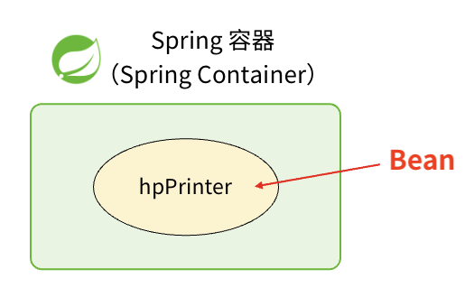
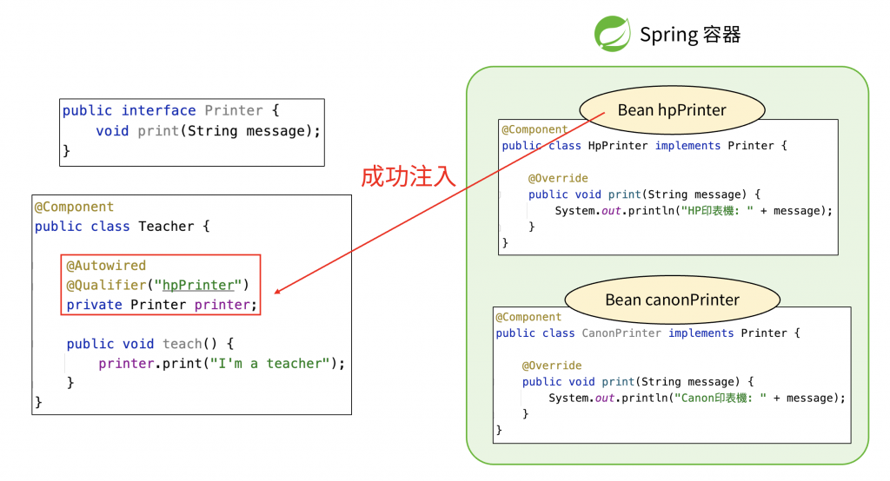
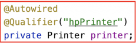
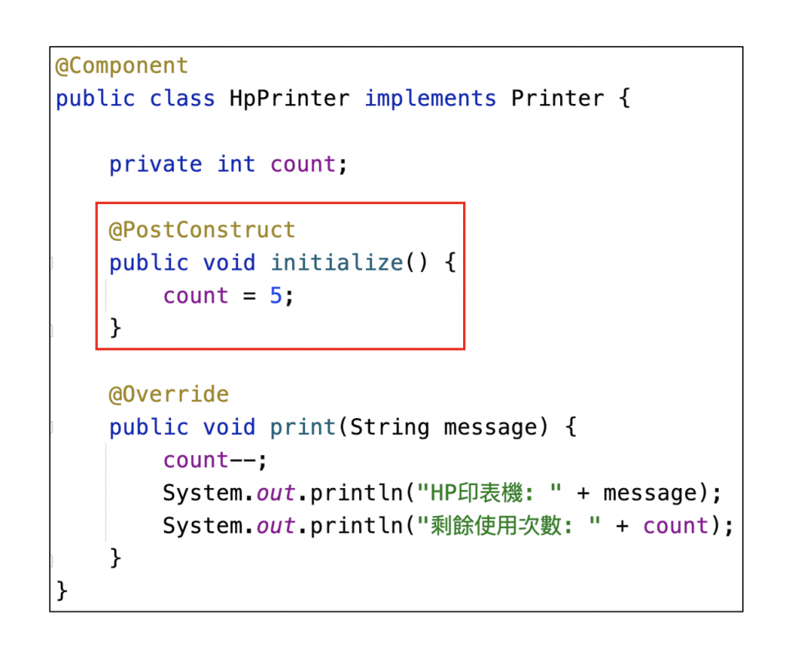
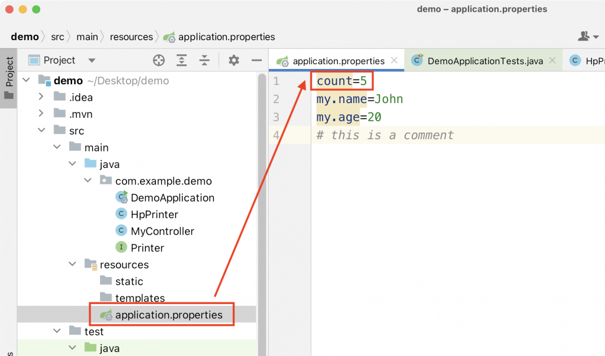
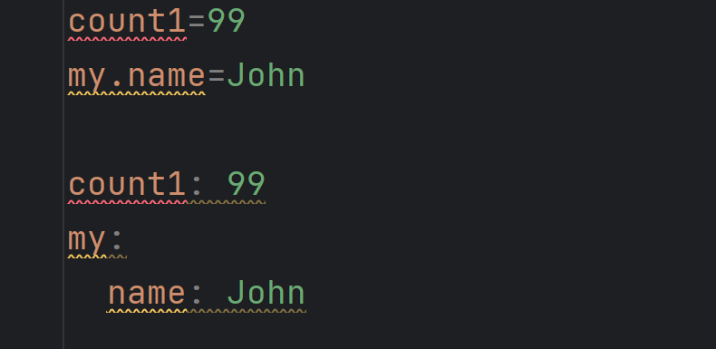

Spring Boot IOC 基礎名詞,用法 ##備忘錄
Spring是一個容器 用來存放Bean 可以想成由 Spring 容器所管理的 object

@Component : 用來標記這個類別是bean
@Autowired : 說明這裡需要注入bean,但有2點須注意
1.首先必須要確保 「自己也是一個 Bean」(即是有在 class 上面加上 @Component)
2.並且 @Autowired 是透過 「變數的類型」 來注入 Bean 的

@Qualifier:有多種同類型bean時用來篩選的,一定要搭配 @Autowired 一起使用 
平常使用 @Component 去創建 Bean 時，這些 Bean 的名字,就會是Class 名的第一個字母轉成小寫,所以記得第一個字母要改成小寫
所謂的「Bean 的初始化」,指的是 「在 Bean 被創建出來之後,對這個 Bean 去做一些初始值的設定」
@PostConstruct: 加上 @PostConstruct 的方法中,去初始化 Bean 的值

使用 @PostConstruct 的注意事項之一：方法有特定格式
1.這個方法必須是 public
2.這個方法的返回值必須是 void
3.這個方法「不能」有參數
4.這個方法的名字可以隨意取,不影響 Spring Boot 運作,常見的有 setup、init、initialize 之類的
5.在同一個 class 中，建議一次只讓一個方法加上 @PostConstruct
什麼是 Spring Boot 設定檔？
指的是「放在 src/main/resources 這個資料夾底下的 applicaiton.properties 檔案」，而他的目的，就是去「存放 Spring Boot 程式的設定值」
properties 這個語法 ,是使用 key=value 這樣子的格式來撰寫,「每一行」都是一組 key 和 value 的配對
properties 語法的注意事項之一：
1.在 = 的前後不需要加上空白鍵排版,只要全部連在一起寫就好，多加空白鍵反而可能有機會導致程式運行出現問題
2.key 中的 . 表示「的」的概念,my.name=John
3.#可以註解,用法同 Java 中的 // 一樣

使用 @Value 的注意事項：
1.需要遵守固定格式寫法,@Value("${count}") count可以替換成application.properties檔案中的任意一個key
2.只有在 Bean 和 Configuration 中才能生效
3.類型需要一致
4.可以設定預設值,在 @Value 的 key 的後面,加上一個 :

@Value會先去找尋 application.properties 中有沒有這個key,有的話就去讀取那個 key的值到 count1變數中,如果沒有的話,則將 count1變數的值,設定成預設的 200
其實 Spring Boot 設定檔,是可以使用兩種不同的語法來撰寫的,分別是 properties 和 yml
當 Spring Boot 設定檔 「命名成 application.yml」,即是表示他是使用 yml 語法來撰寫,格式則為 key: value
不過一份 Spring Boot程式中只能使用一種語法來撰寫, application.properties 和 application.yml 這兩個檔案,他們「不能同時存在」
也適用key value 的方式來撰寫,注意在 value 前面 「必須」 加上一個空白鍵來隔開 :
yml 是使用「縮排」的方式,來表示中文的「的」的概念
